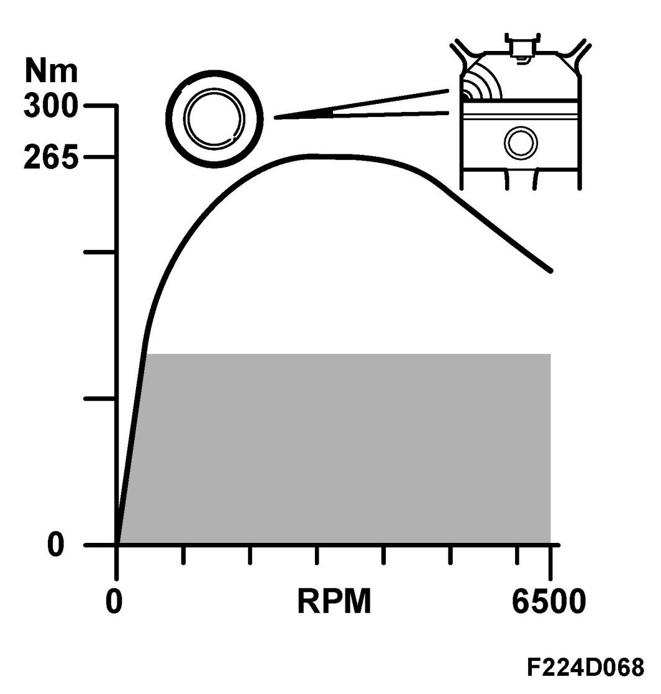
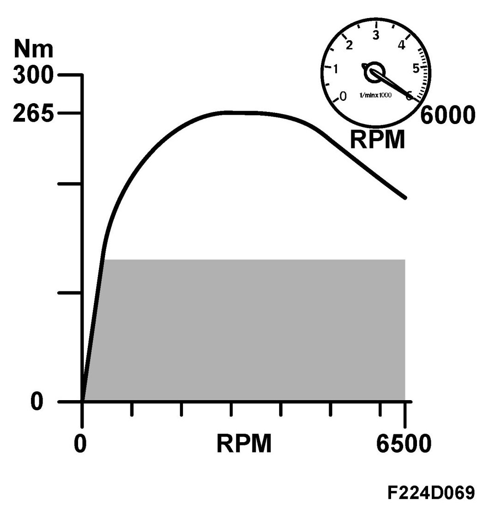
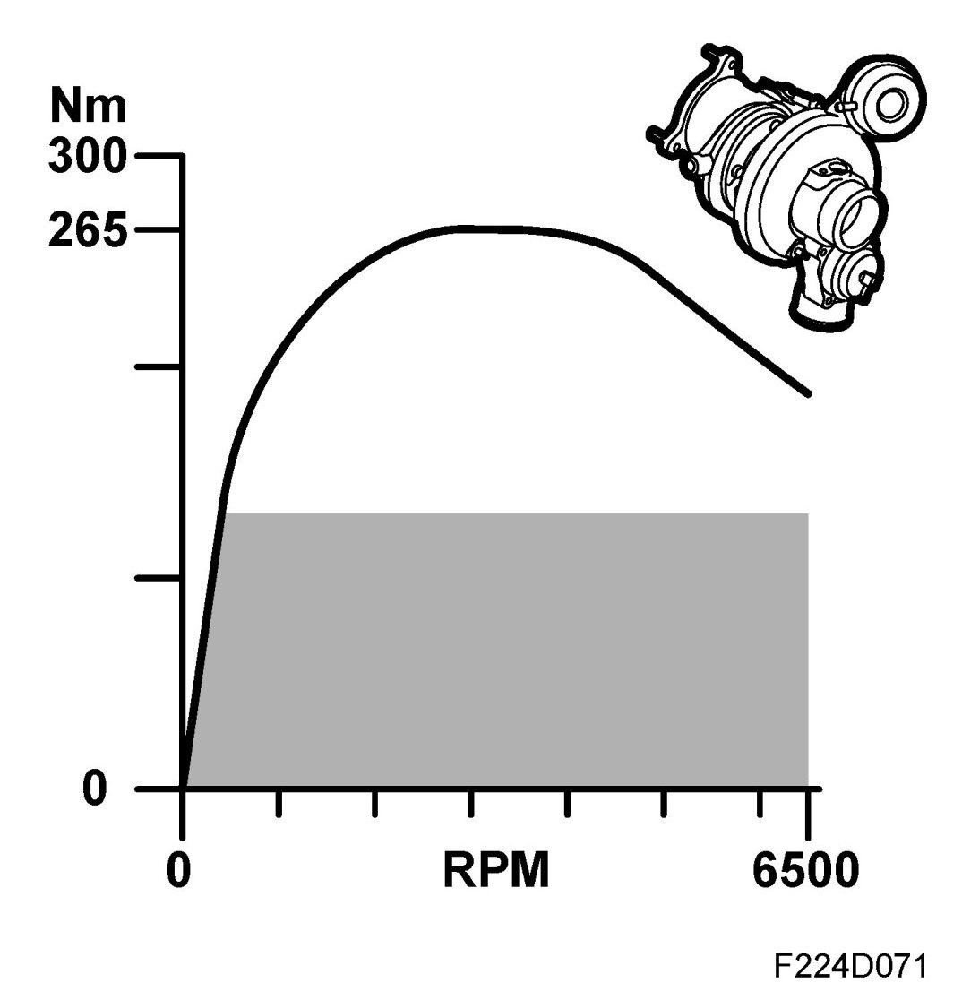
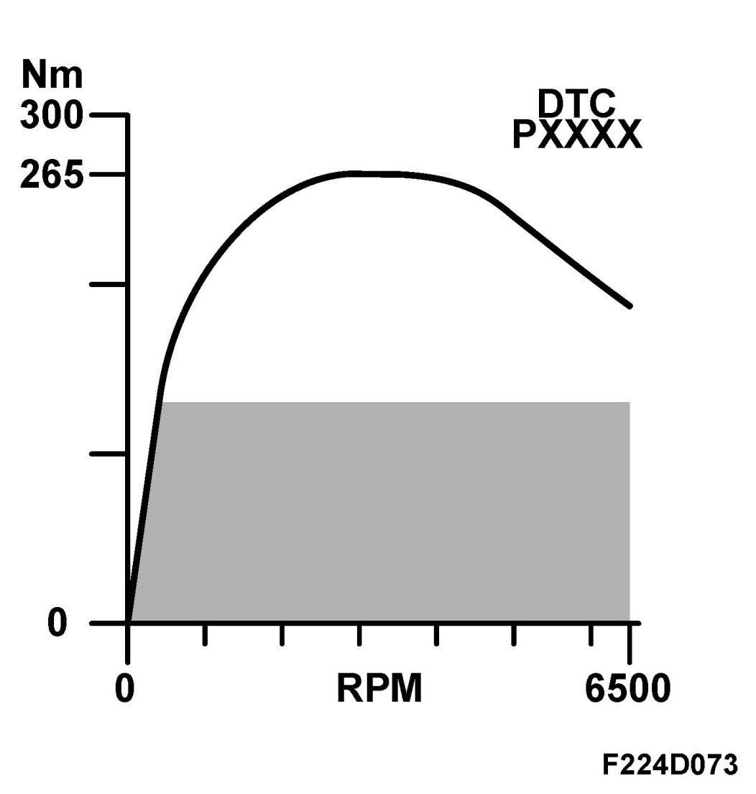

Maximum Engine Torque, 5x
Maximum Engine Torque, 5x
General
The following functions can reduce engine torque in order to protect the engine:
- Knock limit (50)
- Max engine speed (51)
- Max turbo speed (53)
- Charge air control fault (55)
Current torque request / limitation can be read on the diagnostic tool. See read values Torque request
Knock limit
Knock control engine torque limitation, general
Knock control can limit engine torque in order to protect the engine.

Knock control, general
During knock control, there is first a retardation of the ignition timing in each cylinder. If the average value of the ignition retardation exceeds a certain value then the fuel will be enriched.
If the average value of the ignition retardation increases ever more, the engine torque will be limited to protect the engine from damage.
Torque limitation is continuous depending on the average value of the ignition retardation.
Maximum engine speed
Engine torque is limited to protect the engine from damage at higher engine speeds so that the engine speed cannot increase even more.

When the engine speed exceeds 5900 rpm, engine torque will be limited. If the engine speed should increase above 6200 rpm then the fuel supply will be cut.
Turbo speed limitation
Engine torque is limited in case of high pressure ratios across the compressor to protect the turbo from being damaged by overrevving.

The pressure ratio is the absolute pressure from the turbocharger divided by its inlet pressure.
The charge air absolute pressure sensor (688) and the atmospheric pressure sensor (539) are used to calculate the pressure ratio.
High pressure ratios arise when driving with heavy engine loads at altitudes where the atmospheric pressure is low. A high pressure ratios gives high turbine speed.
Charge air control fault
Engine torque is limited in the following cases:

- Electrical faults in charge air control
- Mechanical faults in charge air control that result in engine torque exceeding the requested engine torque.